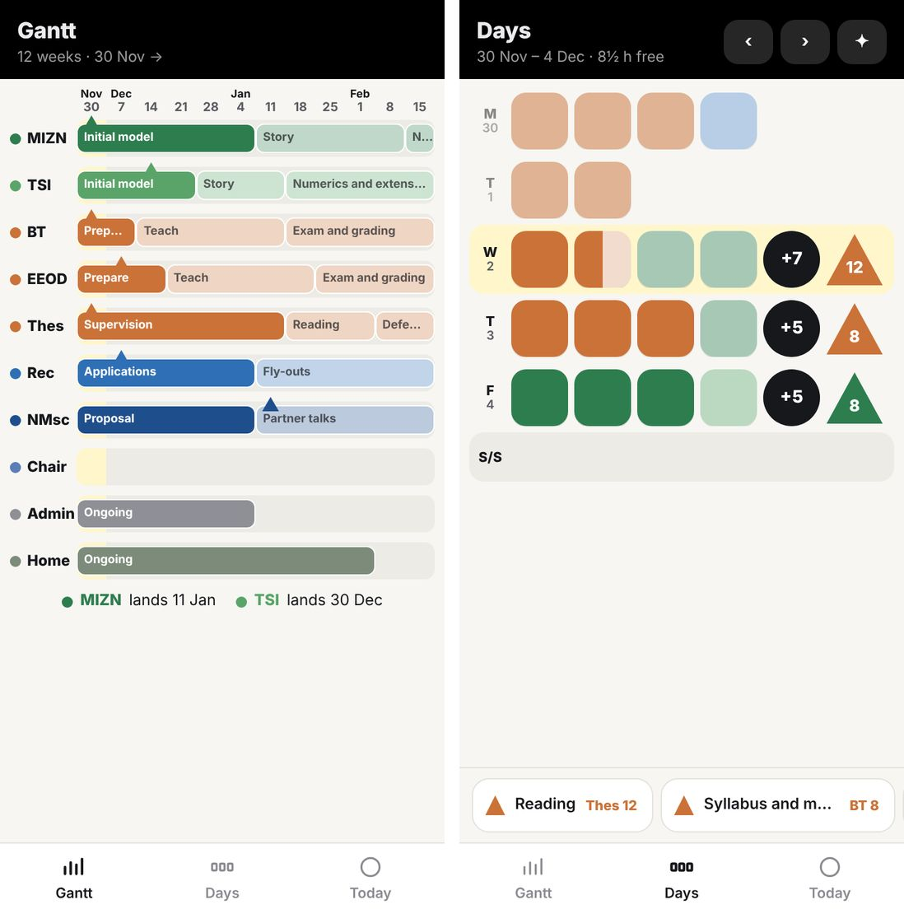
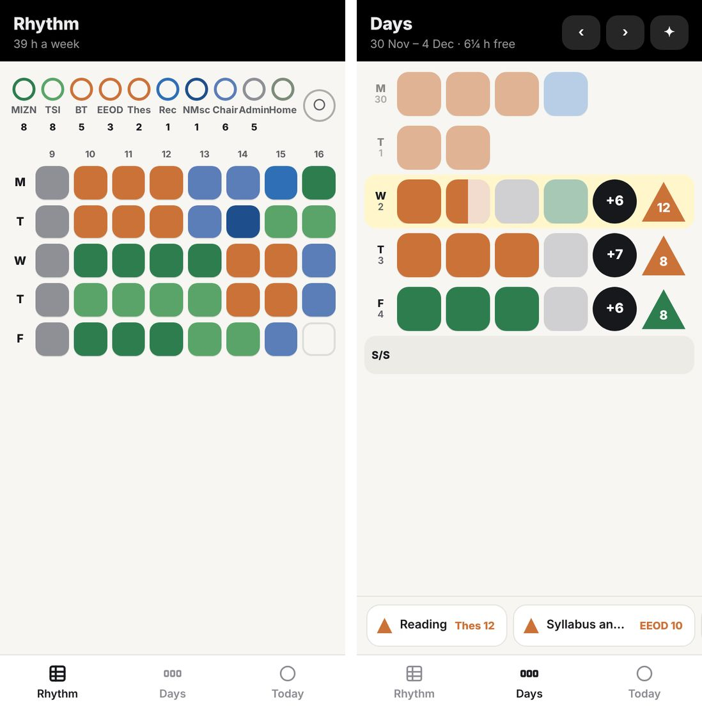
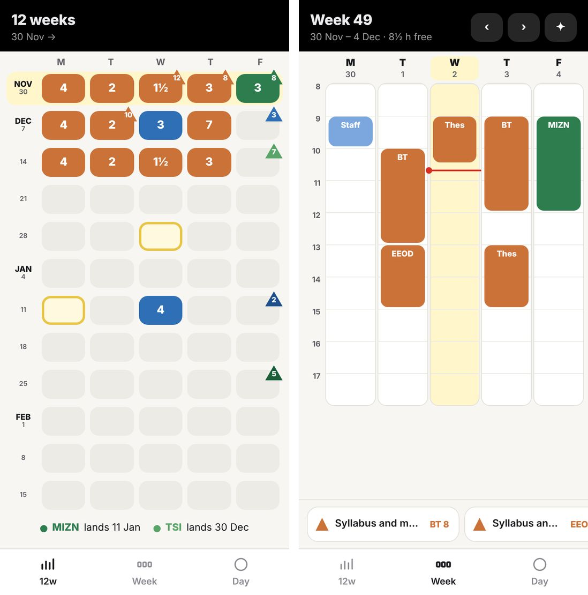
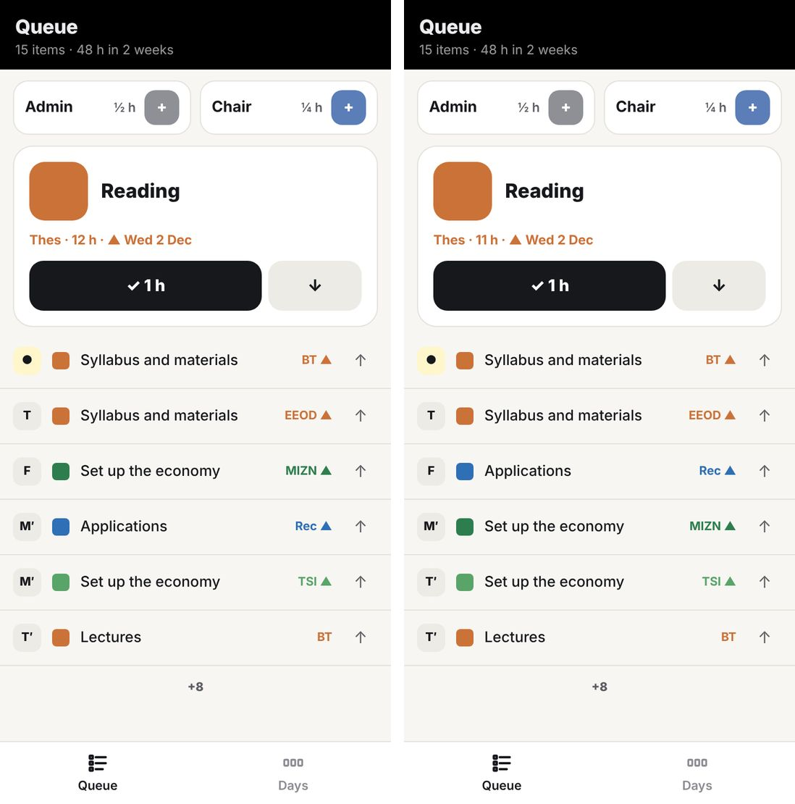
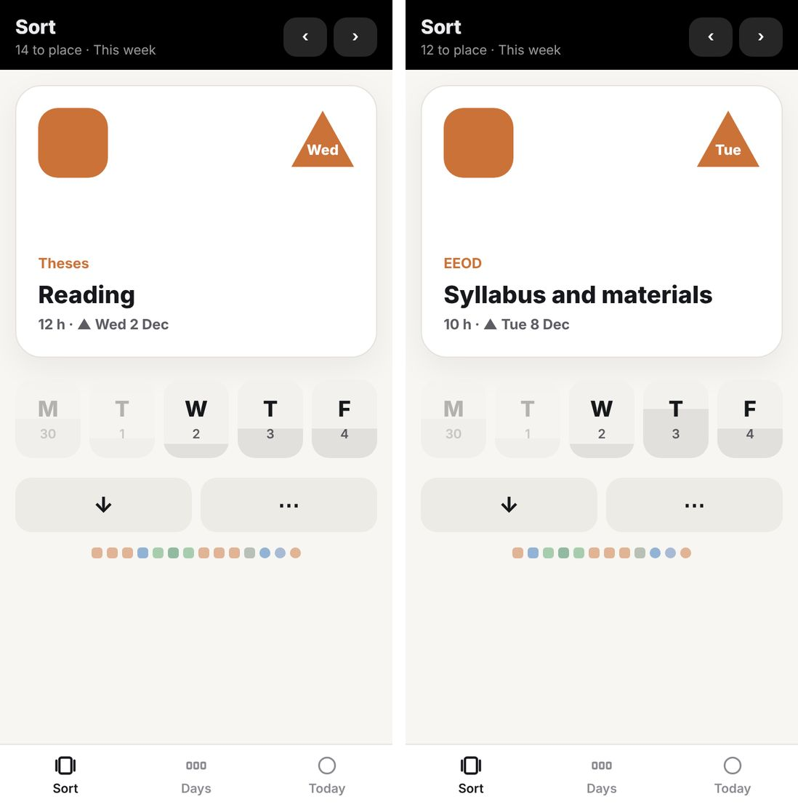
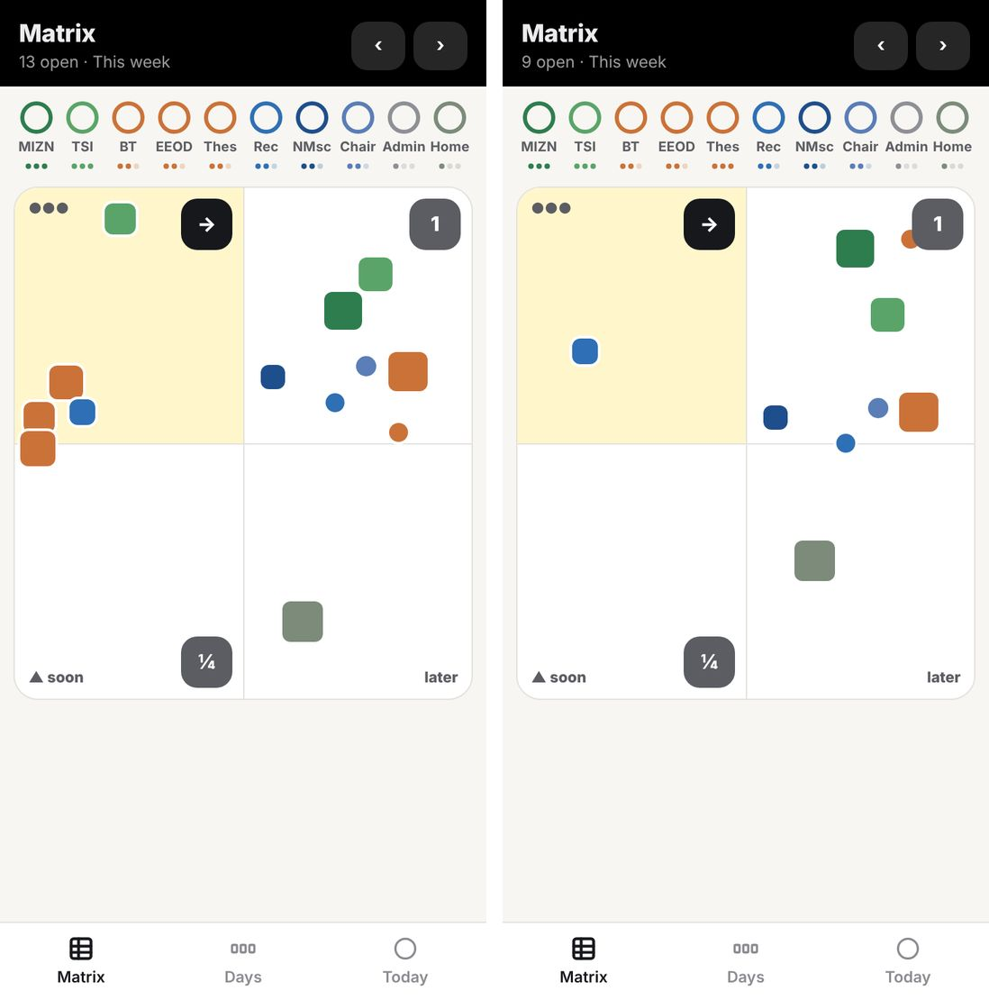
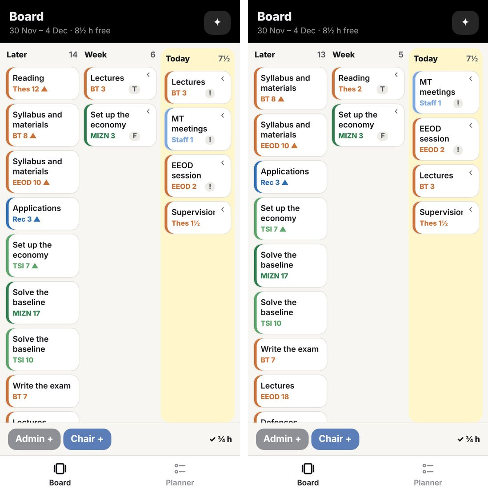
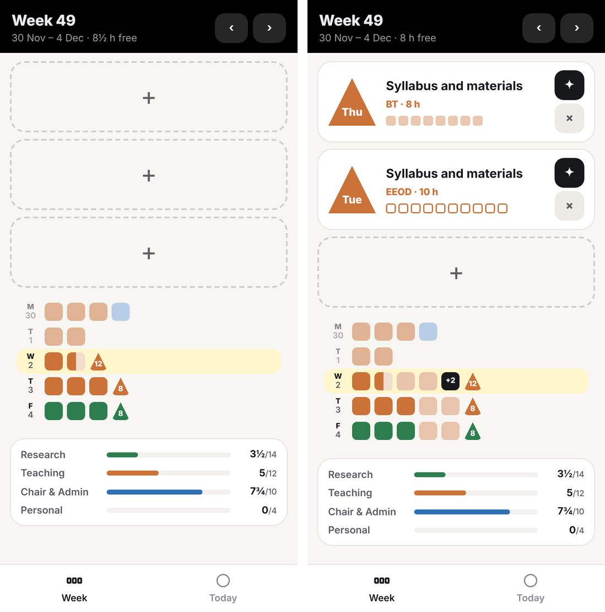
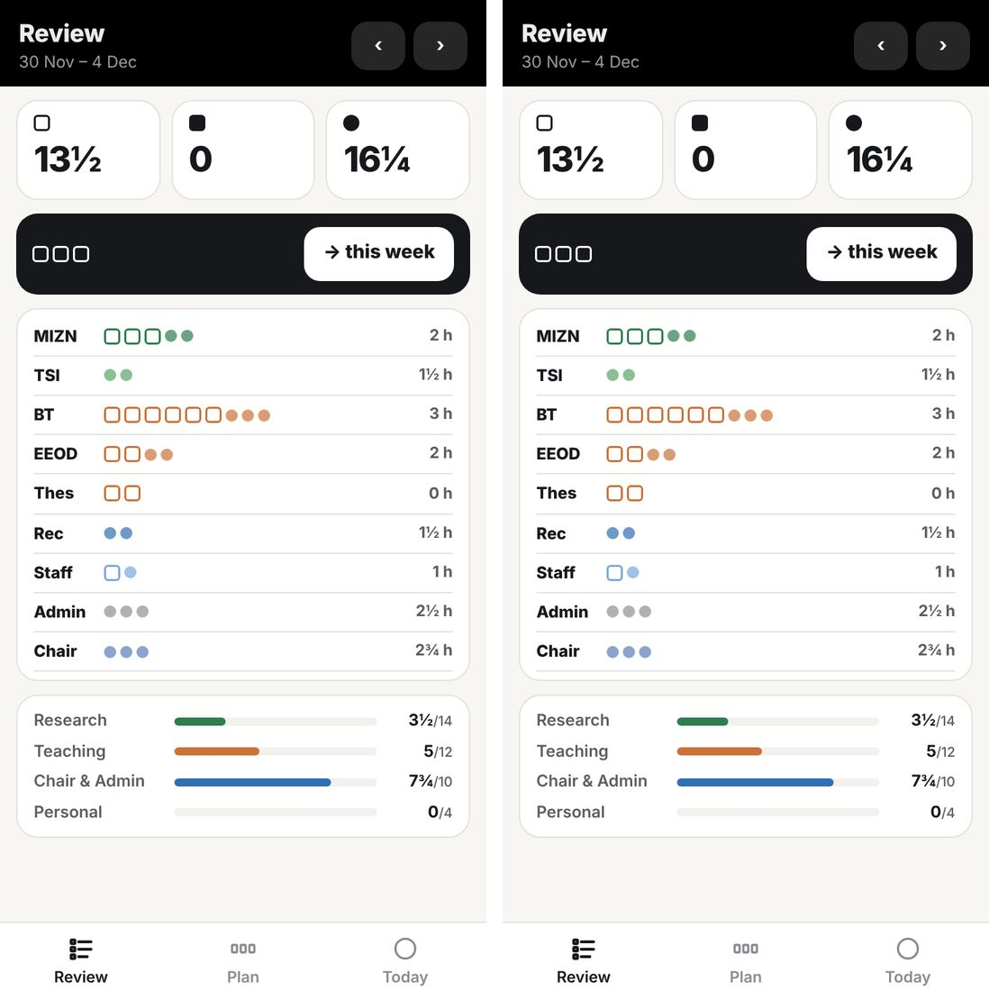
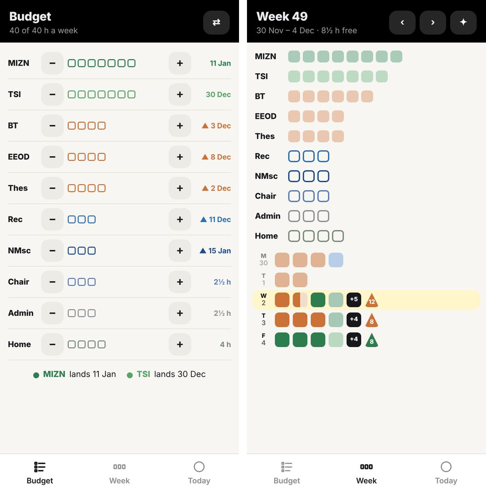

Ten different ways to go from long term to week to day, each in two or three tabs and in the original Hours look: Gantt, Rhythm, Agenda, Queue, Sort, Matrix, Board, Three, Review, Budget.

01GanttPlan stages, not tasks. Each project's stages are bars across 12 weeks; tap one to shift or stretch it. ✦ turns the stages active this week into squares in Days. Today ticks them off.Open Gantt
02RhythmPaint your ideal week once: pick a project in the row and tap hours to colour them. ✦ stamps that rhythm onto the coming week as squares, with deadlines on top. Today ticks it off.Open Rhythm
03AgendaClock time. The week is a calendar from 8 to 18: tap an empty hour to choose what goes there, or tap a square and then another hour to move it. Day is a timeline with a now line. 12w is the long view.Open Agenda
04QueueOne list in order of what comes next. You only set the order with ↑; the days fill themselves from it by capacity, so each item shows the day it will land. The top item is your Now card.Open Queue
05SortPlan the week one card at a time. Each task or quick task comes up as a big card: tap a day letter to put it there, or ↓ to leave it for later. Days shows the sorted week; Today ticks it off.Open Sort
06MatrixA map of everything open: left is urgent (▲ soon), top is important. Tap a project in the row to raise its importance. Tap a square to give it a day; → on the top-left corner puts all urgent and important work in the week.Open Matrix
07BoardYour flow as three columns: Later, Week, Today. Tap a card to move it one step right, and tap a Today card when it's done. ‹ moves a card back. ✦ fills the week. Done collects at the bottom.Open Board
08ThreeEach week has three outcomes, chosen from deadlines and the active research. ✦ spreads an outcome's hours over the week as squares. Admin, Chair and teaching run underneath as maintenance. Today shows the three and your list.Open Three
09ReviewThe weekly loop. Review shows what was planned (squares) against what was done and logged (circles), and carries anything open into next week with one tap. Plan fills the next week; Today ticks it off.Open Review
10BudgetHours as a weekly budget per project. Budget sets each project's squares (research also shows when it lands). In Week, tap a hollow square to spend an hour on the day with most room, or ✦ to spend them all. Today ticks it off.Open Budget